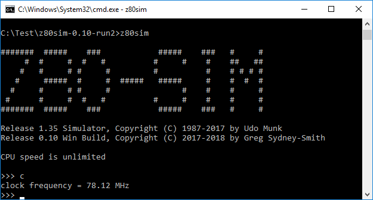

The z80sim program always had a command line option to set clock speed. I can’t say that I expected it to work though. That’s not a comment on Udo, who wrote and maintains the original software. It’s a comment on things that got removed by me when I did the Windows build. There were a number of things using very nicely written unix timers that were never going to work in a pure Windows environment. (I’m told that cygwin adds all of the needed unix support – a great plus – but there seems to be a lot of it to download, install and configure; a bit of a minus.)
To my surprise, despite what I’d initially removed to get z80sim running, the -f option for CPU frequency works just fine.
It effectively adds wait states every so often to slow the emulation down to the required speed. It’s not dissimilar to what I did to reduce host CPU usage when idle. The code uses timeofday functions and a nanosleep() call. The timeofday stuff transfers to Windows easily (as is). I’d never thought nanosleep() would though – Windows doesn’t have the precision for it. It didn’t come up as a compiler or link error when I built the executable so I missed that it was even there. Here it is running:
It starts up slower and displays things slower so it does look like nanosleep() isn’t just returning immediately. Nice.
If 4 MHz is slower, how fast does it run normally?
The start up banner usually says, “CPU speed is unlimited”. If it’s unlimited, what’s the achieved result?
Udo had a command in the z80sim monitor that measured the performance of the system. The command was still present in my Windows build but most of the code was commented out (unix functions not available on vanilla Windows). I changed that with build 0.10. The same functionality is now included. It works pretty much that same as Udo’s original code; but it uses a thread and a sleep() instead of unix timers. You can now see how fast your emulation is running.
On
my newer Win10 laptop I got a little under 80 MHz:

That’s not bad at all. The emulation, manually performing all of the steps needed to mimic a single original instruction, runs 20 times faster than the real thing!
It goes even faster on my older Win8.1 laptop (158 MHz, probably a better processor rather than an OS thing).
The measurement process is simplistic but it is just as valid as any other more complicated arbitrary combination of instructions. It executes jump instructions for three seconds and counts how many occurred. A jump instruction takes 10 T-states (clock cycles) so the speed of the CPU clock can be determined: MHz = jump instructions * 10 / 3 seconds.
The process is destructive – in that it writes over some memory to run the timing program – but the used memory is saved and restored afterwards, just like in Udo’s original. You can safely do the test and resume a loaded OS and program.
{kind=link}
{kind=link}
{kind=link}